A criança mística do Homem e do Titã retorna mais forte do que nunca! A conexão de Maya com a natureza floresceu, e suas flores antes delicadas agora carregam um imenso poder de cura e veneno mortal. Com suas habilidades reformuladas, ela está pronta para florescer novamente no campo de batalha.
Após receber aprimoramentos em suas habilidades e se preparar para suas futuras Habilidades de Relíquia Lendária, a transformação de Maya marca uma nova era para as equipes da Facção Natureza em Hero Wars Alliance. Prepare-se para experimentar sua bela e perigosa evolução!
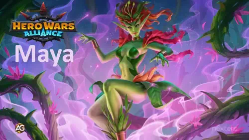
Guia da Reformulação de Maya - Hero Wars Alliance, um jogo desenvolvido pela Nexters.
Quem é Maya?
Maya é uma curandeira da linha do meio que usa o poder de flores encantadas para restaurar seus aliados e envenenar seus inimigos. Sua natureza híbrida de cura e dano a torna uma heroína versátil, capaz de mudar o rumo de batalhas prolongadas.
Classe do Glifo: Curandeira
Posição: Linha do meio
Atributo principal: Inteligência
Facção: Natureza
Como obter Pedras da Alma: Baú Heroico, Eventos
Sinergia: Alvanor, Mushy
Lista de Níveis da Hidra: A
Com suas skins reformuladas oferecendo bônus mais fortes e as futuras habilidades lendárias de relíquia no horizonte, Maya está evoluindo de uma curandeira de suporte para uma peça central poderosa nas equipes da Natureza. Sua sinergia com Alvanor e Mushy aumenta tanto sua capacidade de cura quanto seu dano contínuo.
Quer você esteja enfrentando a Hidra, competindo nas Guerras de Guilda ou subindo nas classificações da Arena, as novas melhorias de Maya a tornam uma força radiante que vale o investimento. Prepare seu jardim a deusa das flores despertou.
Prós e Contras da Maya – Hero Wars Alliance
✅ Prós
Excelente sustentação através de sua habilidade de cura Rainha das Flores, mantendo os aliados vivos em batalhas longas.
Forte dano puro proveniente de suas plantas, capaz de ignorar armadura e causar dano até mesmo em inimigos tanques.
Escala muito bem com Ataque Mágico e Inteligência, tornando-se extremamente eficaz com investimento adequado em artefatos e skins.
Fornece cura em área contínua para toda a equipe e mantém pressão constante no campo de batalha com suas plantas invocadas.
Suas habilidades têm ótima sinergia em times focados em magia e podem virar o jogo em batalhas prolongadas.
❌ Contras
Dano inicial lento — suas plantas precisam de tempo para crescer e causar dano consistente.
Vulnerável a dano explosivo e efeitos de silêncio antes que suas curas e plantas entrem em ação.
Menos eficaz contra times com alta defesa física ou heróis que removem efeitos de dano contínuo.
Depende de boa sinergia de equipe e de heróis de suporte que a protejam enquanto suas plantas ganham força.
Prioridade de Melhoria das Habilidades de Relíquia Lendária da Maya - Hero Wars Alliance
Descubra como as habilidades de relíquia e buffs reformulados da Maya a transformam em uma curandeira e causadora de veneno ainda mais poderosa.
Saiba quais habilidades aprimorar primeiro!
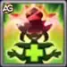
1ª – Rainha das Flores
A habilidade principal da Maya, que a define como protetora e curandeira. Ela faz crescer uma flor mágica ao seu redor, protegendo-a e restaurando a vida de todos os aliados ao longo do tempo.
A flor permanece ativa até ser destruída. A cura por segundo é baseada em (10% de Ataque Mágico + 3000), e a durabilidade da flor escala com
(135% de Ataque Mágico + 34800).
Essa é sua habilidade mais importante, pois oferece cura e proteção contínuas — especialmente eficaz em batalhas longas ou contra equipes com muito veneno.
Informações da Habilidade
Fórmula de regeneração de vida por segundo: (10% do Ataque Mágico + 3000)
Fórmula da vida da flor: (135% do Ataque Mágico + 34800)
Palavras-chave: Escudo
Atraso da animação: 0,73 segundos
Alcance: 1000
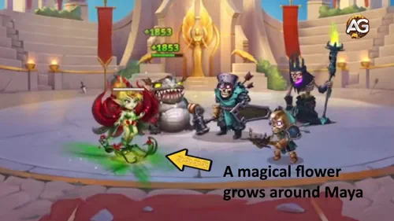
Rainha das Flores, Hero Wars Alliance.
Prioridade de Evolução:Muito Alta – Define o papel da Maya como uma curandeira e provedora de escudo de elite.
1ª – Relíquia Lendária Aprimorada Nível 10: Rainha das Flores
Quando aprimorada para sua forma de Relíquia Lendária, a flor da Maya passa a aumentar a Resistência da equipe em
(15% de Ataque Mágico + 3000) enquanto estiver ativa.
A Resistência reduz o dano recebido quando a vida de um aliado está baixa, funcionando contra todos os tipos de dano. Isso torna seu escudo ainda mais confiável e protetor,
transformando Maya em uma potência defensiva.
Fórmula da Resistência:(Resistência / (Resistência + Atributo Principal do Inimigo)) × 100%
Informações de Desbloqueio da Relíquia no Nível 10
Tabela: Informações de Desbloqueio da Relíquia no Nível 10
Informação
Valor
Fragmentos de Relíquia Necessários (Nível 2–10)
280
Total de Fragmentos de Relíquia (Nível 0–10)
330
Bônus Total de Ataque Mágico (Nível 0–10)
+11000
Bônus Total de Vida (Nível 0–10)
+56149
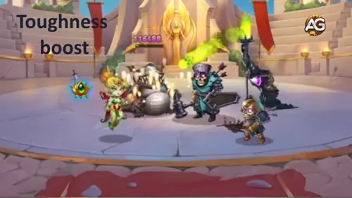
Rainha das Flores Lendária, Hero Wars Alliance.
Prioridade de Evolução:Alta – Melhora a durabilidade da equipe com um poderoso bônus de Resistência.
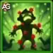
2ª – Pólen Envenenado
Maya libera uma nuvem de pólen envenenado que atinge o inimigo mais distante, causando dano puro a cada 6 segundos.
A fórmula do dano é (75% de Ataque Mágico + 14400).
Essa habilidade é especialmente eficaz contra heróis de retaguarda como curandeiros e magos, aplicando pressão constante e enfraquecendo o inimigo mesmo atrás dos tanques.
Informações da Habilidade
Fórmula — Dano do Veneno:(75% do Ataque Mágico + 14400) de dano puro a cada 6,0 segundos
Recarga: 12 segundos
Atraso da animação: 0,61 segundos
Duração: 6 segundos
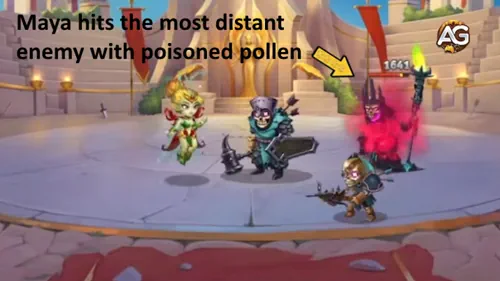
Pólen Envenenado, Hero Wars Alliance.
Prioridade de Evolução:Médio-Alta – Dano puro consistente que pressiona a retaguarda inimiga.
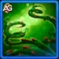
3ª – Vínculos Venenosos
Invoca vinhas vivas que puxam os inimigos mais à esquerda e à direita, enredando-os e envenenando-os com dano puro contínuo.
O veneno causa (50% de Ataque Mágico + 14400) a cada 6 segundos.
Esse controle de multidão é útil contra equipes com formações amplas ou múltiplos suportes, embora tenha menos impacto em batalhas muito rápidas.
Informações da Habilidade
Fórmula – Dano do Veneno:(50% do Ataque Mágico + 14400) de dano puro a cada 6,0 segundos
Recarga inicial: 13 segundos
Recarga: 20 segundos
Atraso da animação: 0,8 segundos
Duração: 6 segundos
Área: 180
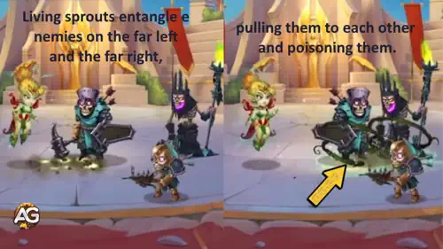
Vínculos Venenosos, Hero Wars Alliance.
Prioridade de Evolução:Média – Útil para controle, mas menos essencial que suas habilidades principais de flor.
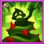
4ª – Vingança da Rainha
Quando a flor da Maya é destruída, suas raízes atacam, enredando e envenenando inimigos próximos.
A fórmula do dano de veneno é (Ataque Mágico + 52800).
Esta habilidade oferece dano de retaliação e controle de grupo após a perda da flor protetora.
Informações da Habilidade
Fórmula – Dano de Veneno:(100% do Ataque Mágico + 52800)
Duração: 8 segundos
Área: 350
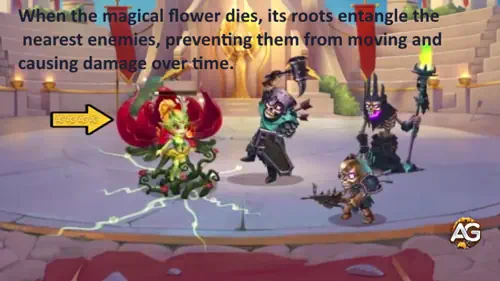
Vingança da Rainha, Hero Wars Alliance.
Prioridade de Evolução:Médio-Alta – Excelente para controle e dano extra quando a flor é destruída.
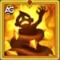
4ª – Relíquia Lendária Aprimorada Nível 20: Vingança da Rainha
A forma de Relíquia Lendária permite que as raízes da flor da Maya enredem e envenenem inimigos não apenas quando são destruídas, mas também quando aparecem.
O dano de veneno permanece (Ataque Mágico + 52800).
Isso transforma a flor em uma ferramenta ofensiva e defensiva, tornando Maya muito mais letal em batalhas PvE e PvP.
Informações de Desbloqueio da Relíquia no Nível 20
Tabela: Informações de Desbloqueio da Relíquia no Nível 20
Informação
Valor
Fragmentos de Relíquia Necessários (Nível 11–20)
800
Total de Fragmentos de Relíquia (Nível 0–20)
1130
Bônus Total de Ataque Mágico (Nível 0–20)
+29350
Bônus Total de Vida (Nível 0–20)
+149734
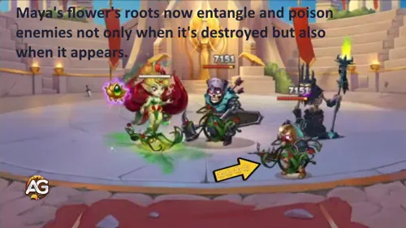
Vingança da Rainha Lendária, Hero Wars Alliance.
Prioridade de Evolução:Alta – Amplia seu controle de área e disseminação de veneno tanto ao surgir quanto ao ser destruída.
5ª – Relíquia Lendária Nível 1: Gota de Vida
A cada 17 segundos, Maya invoca um broto de cura que restaura a vida do aliado mais à direita por 10 segundos, depois se move para o aliado mais fraco e continua curando.
A fórmula de cura é (50% de Ataque Mágico) por segundo.
Essa habilidade oferece cura contínua e combina perfeitamente com seu tema de regeneração.
Informações de Desbloqueio da Relíquia no Nível 1
Tabela: Informações de Desbloqueio da Relíquia no Nível 1
Informação
Valor
Fragmentos de Relíquia Necessários (Nível 0–1)
50
Total de Fragmentos de Relíquia (Nível 0–1)
50
Bônus Total de Ataque Mágico (Nível 0–1)
+5.645
Bônus Total de Vida (Nível 0–1)
+28.794
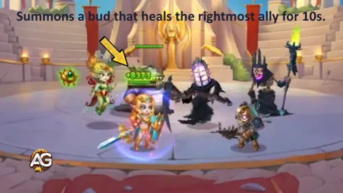
Gota de Vida Lendária, Hero Wars Alliance.
Prioridade de Evolução:Alta – Cura constante e eficiente que melhora a sobrevivência em batalhas prolongadas.
6ª – Relíquia Lendária Nível 30: Poder da Natureza
Com esta relíquia, os efeitos de cura e veneno da Maya se espalham para aliados e inimigos próximos ao alvo principal.
Isso aumenta drasticamente seu impacto em área, permitindo curar vários aliados e envenenar grupos de inimigos.
Essa habilidade transforma Maya em uma unidade de suporte para todo o time, e não apenas de alvo único.
Informações de Desbloqueio da Relíquia no Nível 30
Tabela: Informações de Desbloqueio da Relíquia no Nível 30
Informação
Valor
Fragmentos de Relíquia Necessários (Nível 21–30)
1750
Total de Fragmentos de Relíquia (Nível 0–30)
2880
Bônus Total de Ataque Mágico (Nível 0–30)
+57.570
Bônus Total de Vida (Nível 0–30)
+293.704
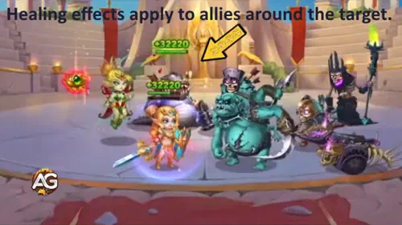
Poder da Natureza Lendária, Hero Wars Alliance.
Prioridade de Evolução:Muito Alta – Expande a cura e o veneno da Maya para afetar grupos inteiros, tornando-a indispensável.
Melhor Skin para Maya – Hero Wars Alliance
Descubra as melhores skins para Maya em Hero Wars Alliance! Saiba quais delas aumentam mais sua cura e dano após seu poderoso retrabalho, incluindo as novas Stellar Skins.
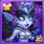
Skin+ Estelar
Bônus de Status: Esmagamento +11.840 (Skin Estelar base: +5.920, dobrado quando ativado)
Prioridade de Evolução:Muito Alta – Esmagamento é um atributo ofensivo poderoso, crucial no fim do jogo e essencial para aplicar pressão de dano. Com a nova Skin+ Estelar, é a maior prioridade de evolução.
Observação sobre Esmagamento: O bônus total de +11.840 é obtido ao ativar o bônus duplo da Skin+ Estelar (5.920 base).
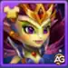
Skin de Campeã
Bônus de Status: Ataque Mágico +10.687
Prioridade de Evolução:Alta – Aumenta o dano do veneno e dos ataques florais da Maya, tornando-a muito mais letal após o retrabalho. Segunda maior prioridade após a Skin Estelar.
Skin de Inverno
Bônus de Status: Ataque Mágico +10.665
Prioridade de Evolução:Alta – Uma Skin ofensiva excelente, sinergizando perfeitamente com seu artefato e bônus da Natureza. Prioridade logo atrás da Skin de Campeã.
Skin Padrão
Bônus de Status: Inteligência +1.365
Ataque Mágico proveniente de Inteligência: +4.095
Defesa Mágica proveniente de Inteligência: +1.365
Ataque Físico proveniente de Inteligência: +1.365
Prioridade de Evolução:Média – Um aumento equilibrado para cura e dano no início do jogo graças ao atributo Inteligência.
Skin Romântica
Bônus de Status: Saúde +106.645
Prioridade de Evolução:Média-Baixa – Aumenta a sobrevivência em batalhas mais longas, mas não oferece benefícios ofensivos para cura ou veneno.
Skin Demoníaca
Bônus de Status: Defesa Mágica +10.650
Prioridade de Evolução:Baixa – Fornece defesa contra inimigos mágicos, mas contribui pouco para cura ou dano da Maya.
Prioridade de Evolução dos Artefatos da Maya – Hero Wars Alliance
Descubra quais artefatos da Maya devem ser priorizados em Hero Wars Alliance! Saiba quais aprimoram melhor seu poder de cura e o dano das flores venenosas após o seu rework.
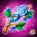
1º – Artefato de Arma: Galho da Árvore Mãe
Efeito: Ativa com a habilidade suprema da Maya, concedendo Defesa Mágica +32.040 para toda a equipe por 9 segundos.
Prioridade de Evolução:Alta – Este artefato é essencial para a sobrevivência do time. Como ele é ativado junto com o ultimate da Maya, protege os aliados durante seus surtos de cura e ataques de flores venenosas. Evoluí-lo aumenta significativamente a durabilidade da equipe em batalhas PvE e PvP.
2º – Artefato de Livro: Tomo do Conhecimento Arcano
Atributos: Ataque Mágico +10.680 | Vida +53.394
Prioridade de Evolução:Média – O bônus de Ataque Mágico aumenta diretamente a cura e o dano das flores venenosas da Maya. Embora seja útil, não oferece defesa em grupo como o artefato de arma, tornando-se uma prioridade secundária de evolução.
3º – Artefato de Anel
Atributos: Inteligência +3.990
Ataque Mágico proveniente da Inteligência: +11.970
Defesa Mágica proveniente da Inteligência: +3.990
Ataque Físico proveniente da Inteligência: +3.990
Prioridade de Evolução:Baixa – O aumento de Inteligência melhora levemente todos os atributos da Maya, mas o impacto é pequeno comparado aos outros artefatos. Evolua este por último, pois seus efeitos são passivos e não fortalecem diretamente a equipe ou suas habilidades principais.
Ordem Final de Prioridade: Artefato de Arma → Artefato de Livro → Artefato de Anel
Essa ordem garante que o poder de cura da Maya permaneça forte enquanto protege sua equipe contra ataques inimigos em batalhas intensas.
Prioridade de Evolução dos Glifos da Maya
Saiba quais glifos da Maya são mais eficazes para evoluir primeiro em Hero Wars Alliance. Seus glifos aumentam o dano de veneno, o poder de cura e a sobrevivência geral — essenciais tanto para a Arena quanto para as Guerras de Guilda.
1º – Glifo de Ataque Mágico
Este glifo aumenta o Ataque Mágico total da Maya em +12.850. Como todas as suas habilidades de cura e veneno escalam com Ataque Mágico — como Rainha das Flores e Pólen Envenenado — este é o glifo mais impactante para evoluir primeiro. Quanto maior o Ataque Mágico dela, mais fortes se tornam suas curas por tempo e seu dano venenoso.
Atributos no Nível 80: +12.850 Ataque Mágico
Prioridade de Evolução:Muito Alta – Aumenta enormemente o poder de cura e o dano ofensivo em todas as batalhas.
2º – Glifo de Vida
O Glifo de Vida concede +122.800 de Vida. Mais Vida ajuda a Maya a sobreviver por mais tempo para sustentar sua equipe com cura. Também faz com que o escudo da Rainha das Flores dure mais, já que depende da sobrevivência da Maya para continuar regenerando os aliados.
Atributos no Nível 80: +122.800 Vida
Prioridade de Evolução:Alta – Fundamental para a sobrevivência, tanto no papel defensivo quanto no de suporte.
3º – Glifo de Inteligência
Cada ponto de Inteligência aumenta os principais atributos da Maya: +3 de Ataque Mágico, +1 de Defesa Mágica e +1 de Ataque Físico. Embora o aumento de Ataque Mágico melhore suas curas e venenos, o crescimento é mais lento em comparação ao glifo direto de Ataque Mágico. Ainda assim, é um upgrade valioso para o progresso a longo prazo.
Atributos no Nível 80: +2.110 Inteligência
Ataque Mágico proveniente da Inteligência: +6.330
Defesa Mágica proveniente da Inteligência: +2.110
Ataque Físico proveniente da Inteligência: +2.110
Prioridade de Evolução:Média-Alta – Melhora os atributos ofensivos e defensivos, mas é menos impactante que os glifos de Ataque Mágico ou Vida.
4º – Glifo de Defesa Mágica
Concede +12.850 de Defesa Mágica, reduzindo o dano de magos inimigos. É particularmente útil contra heróis como Lars, Krista ou Celeste. No entanto, a Maya já oferece suporte defensivo com sua flor, tornando este glifo uma prioridade secundária.
Atributos no Nível 80: +12.850 Defesa Mágica
Prioridade de Evolução:Média – Boa opção contra times focados em magia, mas menos importante no geral.
5º – Glifo de Armadura
Concede +12.850 de Armadura, protegendo contra atacantes físicos. Embora aumente a sobrevivência, não melhora as habilidades de cura ou veneno da Maya. Como sua flor frequentemente absorve parte do dano, este glifo tem o menor impacto em seu desempenho geral.
Atributos no Nível 80: +12.850 Armadura
Prioridade de Evolução:Baixa – Útil apenas em confrontos contra times físicos, devendo ser evoluído por último.
Ordem Final de Prioridade: Ataque Mágico → Vida → Inteligência → Defesa Mágica → Armadura
Essa ordem garante que o potencial de veneno e cura da Maya alcance o máximo, mantendo ao mesmo tempo uma boa resistência em lutas prolongadas.
Conclusão – Guia da Maya Hero Wars Alliance
Maya é uma das heroínas mágicas mais equilibradas de Hero Wars Alliance, oferecendo tanto cura constante quanto dano puro confiável através de suas plantas invocadas. Ela se destaca em batalhas prolongadas, onde sua cura mantém os aliados vivos enquanto suas plantas enfraquecem lentamente os inimigos. Quando equipada com os visuais, glifos e artefatos corretos, Maya se torna uma híbrida essencial de suporte e dano, capaz de sustentar a equipe e pressionar o adversário durante todo o combate.
No entanto, a Maya precisa de proteção contra dano explosivo e efeitos de controle no início das lutas, sendo mais eficaz quando emparelhada com heróis que possam criar escudos ou aplicar controle em área sobre os inimigos. Ela brilha em times baseados em magia e tem excelente sinergia com heróis que amplificam seu ataque mágico ou prolongam a duração das batalhas.
Em conclusão, Maya não é uma maga de explosão de dano, mas sim uma heroína estratégica e focada em resistência, cuja força está em superar e desgastar os oponentes ao longo do tempo. Jogadores que investirem em seu Ataque Mágico, Inteligência e sobrevivência descobrirão nela uma escolha confiável e gratificante tanto para a campanha quanto para as batalhas de guilda.
Sobre o autor
Alexandre Domingos é pós-graduado em Engenharia e atua como Supervisor de Produção. Nas horas vagas, se aventura como youtuber e blogueiro no Alexandre Games, unindo sua paixão por tecnologia e estratégia com o mundo dos games. Desde os 5 anos mergulha nesse universo, jogando em plataformas clássicas como MSX, Master System, Nintendo e até em um velho PC 286. Desde 2019, Alexandre também joga Hero Wars e Mobile Legends, entre outros jogos mobile, criando guias, tutoriais e análises para a comunidade.
Sugestões de Vídeo:
Vídeo: A Maya com Relíquias Lendárias está INSANA! 😱 Elas curam, protegem e MATAM ao mesmo tempo?! Hero Wars Alliance
Você gostou do nosso Guia da Maya Revamp para Hero Wars Mobile? Há algo que não entendeu ou gostaria de sugerir mudanças? Convidamos você a se juntar à nossa sessão de comentários na página do Alexandre Games Blog. Não hesite em expressar sua opinião, clarificar suas dúvidas e compartilhar sua sugestões. Clique no botão abaixo para começar:


 Guia de Relíquias do Fólio em Hero Wars Alliance
Guia de Relíquias do Fólio em Hero Wars Alliance
 Guia da Heroína Electra em Hero Wars Alliance
Guia da Heroína Electra em Hero Wars Alliance
 Guia do Guus – Curandeiro do Caminho da Honra em Hero Wars Alliance
Guia do Guus – Curandeiro do Caminho da Honra em Hero Wars Alliance
 Guia do Rework do Jhu – O Guerreiro Imparável de Hero Wars Alliance
Guia do Rework do Jhu – O Guerreiro Imparável de Hero Wars Alliance